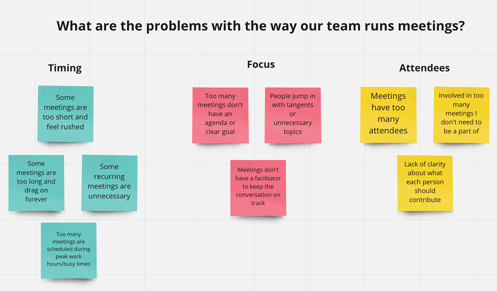

User Research
User Research Analysis Techniques:-
User organise topic into categories helps understand hoe users provide and structure information, which is
useful for information architecture.
Analysis Techniques:
1 Affinity Diagrams:
Organize cluster data from research into groups based on natural relationship. Helps identify patterns and
themes.
2 Thematic Analysis:
Identify, analyze, and report patterns(themes) within data. it involves coding the data, examining it for
recuring themes, and interpreting these themes.
3 Persona Development:
Create fictional characters based on user research to present different user types. Helps the design team
keep the user in mind through the design process.
4 jounery mapping:
Visualize the user's journey through a product or service, Identify pain points, moments of delight, and
opportunities for improvement.
5 Empathy Mapping:
Visual tool to articulate what users say think, do and feel. Helps teams build a deeper understanding of the
user's emotional and cognitive states.
What is journey Mapping?
Journey mapping is a user research technique used to visualize the end-to-end experiences users have with a
product, service, or system. This method involves creating a detailed diagram that illustrates the steps
users go through to accomplish a specific goal, highlighting their interactions, emotions, pain points, and
opportunities for improvement. Journey maps are often used to understand and improve user experiences by
identifying areas where the experience can be enhanced.
Components of Journey Mapping:-
Personas: Use user personas to represent different segments of your
user base. Personas help in
understanding the context and motivations behind users' actions. this includes
demographics, behaviors, goals, and pain points.
Scenarios: Outline specific scenarios or tasks that users
are trying to accomplish. Scenarios help in understanding the context of the user journey.
Stage/Steps: The key phases or the user goes through during thier
jounery. These can include awareness, considerations, purchase, use and post-use.
Touchpoints: Identify all the points where users
interact with the product, service, or brand. These can be physical or digital touchpoints.
Actions: List the specific actions users take at each touchpoint.
Emotions: Capture the emotions users feel during each action. Use
qualitative data from user research to understand these emotions.
Pain Points: Analyze the journey map to identify areas where users
face difficulties or frustrations.
opportunities: Highlight opportunity where the user experience can
be enhanced. This could involve redesigning feature, improving customer support, or streamlining a
process.
Deliverables and Docmentation:-
1 Research Reports:
Detailed documents outlining the research methods, findings, insights, and recommendations. These reports
serve as a preferences for stakeholders and the design team.
2 Personas:
Visual and descriptive representation of the user types. Include demographics, behavior, needs, goals, and
pain points.
Affinity Diagram or Affinity Chart:-
An affinity diagram, also known as an affinity chart, is a tool used to organize ideas, data, or information
into natural groupings based on their relationships. This technique is particularly useful in user research
to synthesize large amounts of qualitative data and identify patterns or themes.

Tool to Create Personas:-
Creating personas is a critical part of user research and user-centered design. Personas help to represent
key segments of your user base, providing a clear picture of who your users are, their goals, behaviors, and
pain points. Here are some popular tools to create personas.
1 Xtensio
Features: Xtensio provides customizable templates specifically designed for creating user personas. It
offers drag-and-drop functionality, real-time collaboration, and easy sharing.
Best For: Teams looking for a user-friendly, collaborative tool with various persona templates.
2 HubSpot Make My Persona/h6>
Features: HubSpot's free tool guides you through a step-by-step process to create detailed personas. It
covers demographics, personal and professional information, and user goals.
Best For: Individuals or small teams seeking a simple, guided process for creating basic personas.